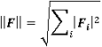
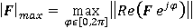

|
|
Probe Object
Defines probes within your structure that store one field component at that location. The field values during time as well as the corresponding S-Parameter are stored. You may have either electric or magnetic field probes in nearfield as well as in farfield region.
Reset
Resets all internal values to their default settings.
ID
Set the ID to be used for the next probe to created. If it is not set or set to a value smaller than zero, an ID will automatically be generated. See also "GetNextValidId" and "GetLastAddedId". To ensure backward compatibility, the caption of a probe still needs to be unique for each probe. However, probes should be handled using the integer value used as ID.
AutoLabel ( bool flag )
If true the caption of the probe will be generated out of its type and its position. It will be updated accordingly once the position will change (due to transformations or parameter changes) and makes sure the caption is always unique
Field ( enum{"efield","hfield","efarfield","hfarfield","rcs"} fieldType )
Selects whether the probe should monitor an electric ("efield") or magnetic ("hfield") field inside the calculation domain or an electric ("efarfield") or magnetic ("hfarfield") farfield or RCS values.
GetField enum{"efield","hfield","efarfield","hfarfield","rcs"}
Returns the field type of the currently selected probe. The selection is done either with the GetFirst or the GetNext function.
Create
Creates the probe.
GetNextValidId long
Returns the ID for the next probe to be generated. In most cases you will not need this function, since the ID can be generated automatically by the Create method.
GetLastAddedId long
Returns the last ID automatically generated by the Create method.
Returns the current caption of a given Probe. To ensure backward compatibility the caption of a probe still needs to be unique for each probe. However, probes should be handled using the integer value used as ID.
DeleteById ( long id )
Deletes the probe with the given ID.
NewCaption ( long id, string caption )
Assigns a new caption to the probe with the given ID.
Methods Concerning Probe Position and Orientation
Xpos ( double pos )
Ypos ( double pos )
Zpos ( double pos )
Defines the position of the probe for the respective coordinate direction.
SetPosition1 ( double pos )
SetPosition2 ( double pos )
SetPosition3 ( double pos )
Defines the first, second or third farfield coordinate parameter of the probe due to the selected coordinate system (using SetCoordinateSystemType method).
The actual coordinate component with SetPostion1/2/3 is listed below depending on the coordinate system type:
|
Coordinate System Type |
Parameter 1 |
Parameter 2 |
Parameter 3 |
|
Cartesian |
X |
Y |
Z |
|
Spherical |
Theta |
Phi |
Radius |
|
Ludwig 2 Azim. over Elev. |
Elevation |
Azimuth |
Radius |
|
Ludwig 2 Elev. over Azim. |
Alpha |
Epsilon |
Radius |
|
Ludwig 3 |
Theta |
Phi |
Radius |
Please note that Cartesian uses global coordinates while all Spherical / Ludwig coordinates are relative to the probe origin.
Orientation ( enum orientType )
Defines the orientation of the probe regarding the coordinate system type set with SetCoordinateSystemType and therefore the field component that is monitored.
orientType can have one of the following values:
|
"x" |
component in x-direction of the cartesian coordinate system |
|
"y" |
component in y-direction of the cartesian coordinate system |
|
"z" |
component in z-direction of cartesian coordinate system |
|
"all" |
create a set of probes with all the available orientations depending on the coordinate system. For instance for the cartesian coordinate system the probes are generated in the x-, y- and z- direction whereas for the spherical coordinate system the probes are in the theta- and phi- direction. The option allows to inspect all the field components at the same time together with the global field magnitude computation. |
|
"theta" |
component in theta-direction of spherical coordinate system |
|
"phi" |
component in phi-direction of spherical coordinate system |
|
"radial" |
component in radial-direction of spherical and Ludwig2/3 coordinate systems |
|
"azimuth" |
component in azimuth-direction of Ludwig 2 Azim. over Elev. coordinate system |
|
"elevation" |
component in elevation-direction of Ludwig 2 Azim. over Elev. coordinate system |
|
"epsilon" |
component in epsilon-direction of Ludwig 2 Elev. over Azim. coordinate system |
|
"alpha" |
component in alpha-direction of Ludwig 2 Elev. over Azim. coordinate system |
|
"horizontal" |
component in horizontal-direction of Ludwig 3 coordinate system |
|
"vertical" |
component in vertical-direction of Ludwig 3 coordinate system |
Note: Using the orientType "all" the global field magnitude of a probe signal in the time domain is computed with the standard norm of a vector according to the formula

Here F represents any real valued field vector and the sum is performed over the field components.
In case of a probe spectra in the frequency domain the global field magnitude is computed according to the maximum field amplitude defined by the formula (here F represents any complex valued field vector)

This definition is consistent with the 2D and 3D field monitor processing, see also the 2D and 3D Field Results / Evaluate Field in arbitrary Coordinates and Probe General pages.
Queries Concerning Probe Position and Orientation
GetPosition1 double
GetPosition2 double
GetPosition3 double
Returns the first, second or third component of the position of the currently selected probe, depending on the corresponding coordinate system type, respectively. The selection of the probe is done either with the GetFirst or the GetNext function.
GetXPos double
GetYPos double
GetZPos double
Returns the position of the probe for the respective coordinate direction.
GetOrientation enum orientType
Returns the orientation of the probe as a string value orientType. Please find the meaning of the different string values in the description of the Orientation method above.
The selection of the probe is done either with the GetFirst or the GetNext function.
GetTheta double
GetPhi double
GetRadius double
Returns the location of the probe in spherical coordinates. The selection of the probe is done either with the GetFirst or the GetNext function.
GetXComp double
GetYComp double
GetZComp double
Returns the orientation of the probe in cartesian coordinates. The selection of the probe is done either with the GetFirst or the GetNext function.
Methods Concerning Farfield Specials
SetCoordinateSystemType ( enum coordType )
GetCoordinateSystemType enum coordType
Sets or returns the coordinate system type for a farfield probe, respectively. For the GetCoordinateSystemType method the selection of the probe is done either with the GetFirst or the GetNext function.
coordType can have one of the following values:
|
”Cartesian” |
Cartesian coordinate system |
|
”Spherical” |
Spherical coordinate system |
|
”Ludwig2ae” |
Ludwig 2 Azimuth over Elevation coordinate system |
|
”Ludwig2ea” |
Ludwig 2 Elevation over Azimuth coordinate system |
|
”Ludwig3” |
Ludwig 3 coordinate system |
Origin ( enum originType )
The origin type of all farfield probes.
originType can have one of the following values:
|
”bbox” |
The center of the bounding box of the structure. |
|
”zero” |
Origin of coordinate system. |
|
”free” |
Any desired point defined by Userorigin |
Userorigin (double x, double y, double z )
Sets origin of the farfield probe calculation if the origin type is set to ”free”.
UseDecouplingPlane ( bool bFlag )
Enables or disables a decoupling plane for a farfield probe calculation.
DecouplingPlaneAxis ( enum{"x", "y", "z"} axis )
This command sets the normal of user defined decoupling plane. The normal is always aligned with one of the three cartesian coordinate axes x, y, or z.
DecouplingPlanePosition ( double position )
Enter here the coordinate of the user defined decoupling plane in normal direction.
SetUserDecouplingPlane ( bool bFlag )
If activated a user defined decoupling plane for a farfield probe calculation is used instead of an automatically detected decoupling plane.
GetFirst long
Selects the first probe in the internal probe list and returns 1 on success and 0 if no probes are defined. The following probes of the list are then selectable using the GetNext function.
GetNext long
Selects the next probe in the internal probe list and returns 1 on success and 0 if no probes are defined. The first probe of the list is selectable using the GetFirst function.
ID -1
AutoLabel 0
Field ("efield")
Xpos (0.0)
Ypos (0.0)
Zpos (0.0)
Orientation ("x")
SetCoordinateSystemType ("Cartesian")
Origin ("bbox")
Userorigin (0.0, 0.0, 0.0)
UseMirrorPlane (False)
MirrorPlaneAxis ("x")
MirrorPlanePosition (0.0)
SetUserMirrorPlane (False)
With Probe
.Reset
.ID 0
.AutoLabel 1
.Field ("efarfield")
.SetCoordinateSystemType ("Spherical")
.SetPosition1 (90.0)
.SetPosition2 (0.0)
.SetPosition3 (1.0)
.Orientation ("Theta")
.Origin ("zero")
.Create
End With
| CST Studio Suite 2022 |
|